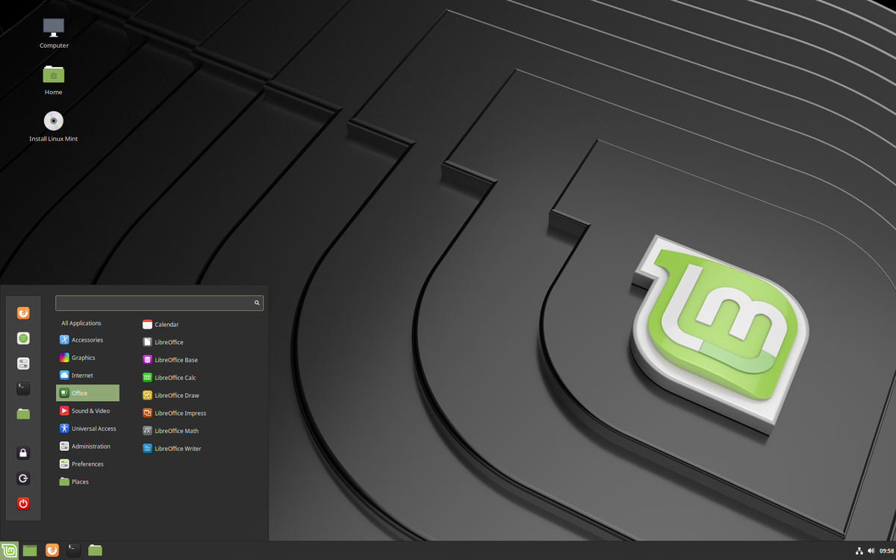

Ubuntu
Fedora
Fedora igualmente que Ubuntu es una distribución mas facil de manejar con una interfaz muy amigable.
Linux mint
Excelente sistema operativo para una maquina con recursos bajos
Zorin OS
Una de mis distribuciones favoritas por su entorno tan limpio y estetico

Distribuciones para usuarios mas avanzados
Las siguientes distribuciones, aunque no son difíciles de utilizar se necesita un conocimiento más concreto para no cometer errores y para instalar algunos programas, así como actualizar los repositorios y drivers del sistema si es que lo requieren. Suelen ser un poco más difíciles porque a pesar de tener ya una instalación con una interfaz gráfica se necesita saber conceptos básicos de comandos para utilizar la terminal después.
CARACTERISTICAS
Debian
Enfocado hacia un usuario mas experimentado que quiere tener un mayor control en su sistema
Kali Linux
Enfocado hacia usuarios que quieren probar herramientas que van dirigidas a seguridad informatica
Opensuse
Aunque este sistema no es muy dificil de utilizar, lo pongo aqui debido a que no es muy conocido y muchos de los comandos son muy parecidos a debian.